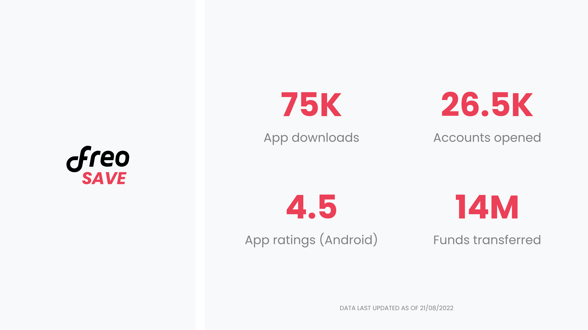

Freo Save
QUICK INTRO
Freo Save is a digital savings bank account in partnership with Equitas Small Finance Bank. We built this product from scratch and went live in 9 months.
COMPANY / ROLE
Freo (Previously MoneyTap) / UI & UX
Why we built Freo Save?
We built Freo Save to solve both, the user’s & the company's needs. From a user standpoint, we solved two aspects. Firstly, Freo Save made banking accessible, simple & user-friendly via the neo-banking model with high-interest rates on savings. Secondly, getting access to credit via banking actions and the boxes proposition provided a worthy substitute for the need of consuming bad-quality credit products to build or improve one’s credit profile and save and grow money faster.
From the company standpoint, Freo's core product (MoneyTap), is a digital money lending platform wherein due to the nature of the business, Freo won’t be able serve almost 90% of the acquired users because of the risk policies involved in approving a customer. So, Freo Save provided a perfect way of serving such user segments & making them serviceable for near-future lending at the same time.
Design process
1. User surveys and market research
The product management team and I started with reaching out to users by sending out surveys to understand their banking needs and expectations. We then started to identify the short falls in the current digital savings products and what we could do better as opposed to our competitors.
By comprehensively critiquing the existing neo-banking products & brainstorming on the findings with the PM, we were able to narrow down to the initial UX approach along with finalizing requirements for the core features, communications, and customer support.
2. Information architecture
Based on the information we collected during our research, PM and I came up with various feature sets and started prioritizing them with respect to different use cases. We also had to keep the banking partners constraints in mind and work around it while defining UX flow.
Account opening journey was mainly defined based on the mandatory questions required by our banking partner. It consists for 5 steps post login and email verification. Starting from PAN details, personal details, professional details, aadhaar details and lastly nominee details. The primary navigational elements after account creation are Home, Boxes and the center fab for easy access to quick actions and menu.
3. Wireframes
I started off with low-fidelity wireframing by sketching my vision of the user journey on paper. After back and forth discussions and feedbacks sessions with my PM and head of design on the structure of the interface, I moved to high-fidelity wireframing.
While working on the hi-fi wireframes, we had taken feedback from the internal teams and our banking partner Equitas Small Finance bank at various points and kept iterating with respect to their feedback.

4. Visual designs
Making the app vernacular
We wanted to cater to a larger customer base, to achieve this we wanted to provide access to easy digital banking to tier 2 and tier 3 cities as well. Hence, we decided to make the app accessible in regional languages. Currently we are live in English, Hindi and Tamil. We plan to add another 6 to 7 languages in the coming releases.
Tools used for funnel improvement
Post the app went live, we started monitoring the funnel on a daily basis to draw inferences to improve the product and the overall funnel. Our in-house data team created a superset dashboard which was used to analyze the primary dropoff points in the funnel.
With the help of user experior, I went through the screens, checked the heatmap analysis, and started drawing inferences and identified similar behaviours and issues. Our product team also did customer calls in order to understand customer concerns in depth.Below I'm demonstrating one example for reference on how we improved the dropoff by 20% in one of our key screens.
Impact and user reviews
Freo Save is in growth phase, currently we have around 26.5k active accounts. App is also well appreciated for the quick onboarding journey and the user friendly interface. It’s rated 4.5 and 4.1 on google playstore and app store respectively (as of 21/08/2022).
To get in touch
Feel free to reach out to me at